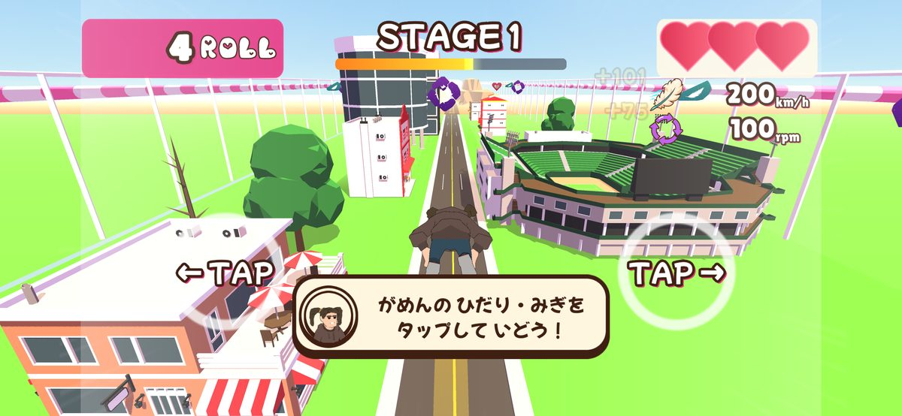
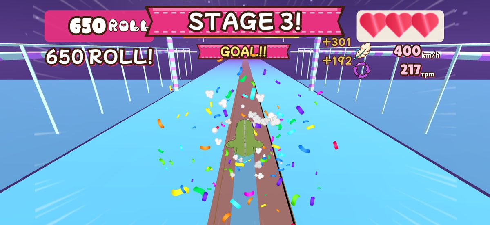
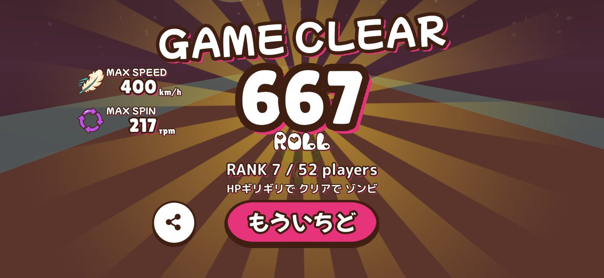
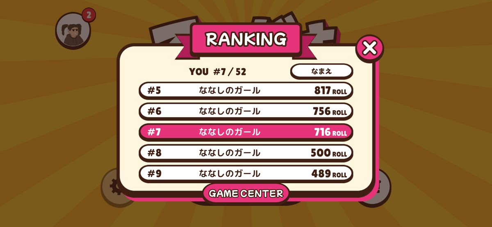

操作は左右タップだけ
画面の左をタップすると左へ、右をタップすると右へころがります。前進は自動なので、片手で遊べます。ぶつかるとHPが減り、HPは何もしなくても少しずつ減っていきます。
「ろりだま」は、止まれずにころがり続ける女の子を左右タップで動かして、ビルも岩も、なぜか海に立っている巨人も、ぜんぶよけていくシュールな3D避けゲームです。片手で遊べて、スコアは「ころがった回数」。着せ替えやオンラインランキングも楽しめます。


説明は、ほぼこれで終わりです。
画面の左をタップすると左へ、右をタップすると右へころがります。前進は自動なので、片手で遊べます。ぶつかるとHPが減り、HPは何もしなくても少しずつ減っていきます。
スコアは「ころがった回数（ROLL）」です。道に落ちているアイテムを拾うと、もっと回って、もっと速くなります。
画面には時速（km/h）と回転数（rpm）のメーターが出ます。加速すると視界が広がって集中線が走り、回転が上がるほど女の子の残す軌跡の色も変わります。最高時速と最高回転数は結果画面に記録されます。
ゴールまで走り切ると、残りHPに応じて回転数に×1.10〜×1.30のボーナスがかかります。ボーナス込みの数字がランキングに反映されます。
ネコ、まじょ、ニンジャ、プリンセス……ころがる女の子を好きな姿に着せ替えできます。プレイ回数や総回転数などの条件で衣装が増えます。見た目が変わるだけで、速さやスコアは全員同じです。ほかにも、何かがころがるらしい……？
世界中のプレイヤーとオンラインランキングで競えます。名前（8文字まで）を入れて上位を目指しましょう。iPhoneではGame Centerのリーダーボードと実績にも対応しています。
絵本のジオラマのような世界を、女の子が止まらずにころがります。ステージが進むほどスピードアップ。音楽もステージごとに切り替わります。


操作の説明からゴール、結果、ランキングまでの画面です。スマホでは画像を左右にスワイプして見られます。




iPhoneとAndroidで遊べます。基本プレイ無料（広告あり）で、広告を非表示にするアプリ内購入があります。
止まれない女の子を左右タップでころがして、障害物をよけていく3D避けゲームです。パステルの街、夕焼けの荒野、巨人が立つ海の3ステージを進み、ゴールを目指します。
画面の左側と右側をタップして、ころがる方向を変えます。前進は自動です。
「ころがった回数」がスコアです。アイテムで回転が上がるほど回数が伸びます。ゴールまで走り切ると、残りHPに応じて×1.10〜×1.30のクリアボーナスがかかります。
ハートはHPを回復し、ローリングは回転数、スピードは前進速度をアップします。
衣装は、プレイ回数や総回転数などのやり込みで解放されます。着せ替えは見た目だけの要素で、速さやスコアは全員同じなのでランキングは公平です。
ランキング画面から名前（8文字まで）を入れると参加できます。ランキングはオンライン時のみ更新されます。転がって障害物をよける遊びに加えて、タップで壊す遊びも楽しみたい方には、いえばく!もおすすめです。
日本語、English、Español、Português、Deutsch、Françaisに対応しています。端末の言語に合わせて切り替わり、設定からも変更できます。
基本プレイは無料（広告あり）です。広告を非表示にするアプリ内購入があります。App StoreまたはGoogle Playからダウンロードできます。